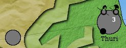

|
A TripleA game by humbabba v0.9.7 (beta) Note: Players will probably want to disable chance-roll notifications under Game>>User Notifications. The game contains many chance rolls, and outcomes are otherwise noted.
The Peloponnesian War, fought primarily between the powerful city-states of Athens and Sparta from 431 to 404 BCE, was the greatest armed conflict the civilized world had ever seen. As leaders in the Persian War, which freed the Greeks from the Persian Empire to the east, both emerged as super powers of the day, and it was perhaps inevitable that they'd go to war for the rulership of all Hellas, as they called the Greek world. - Much of the game is based on a reading of Thucydides' History of the Peloponnesian War. The "historical notes" section is for players curious about the historical justification for some of the game mechanics. Overview This is a game of economic and political warfare as well as military. The sides are very different - broadly, Sparta has a bigger army while Athens has more ships and more money. Athens controls many small cities around the Aegean, while Sparta's power is concentrated in fewer cities, mostly in the Peloponnese. Each also has smaller states on its side - at first. Italy, Corcyra, and Thessaly start allied with Athens, while Sicily and Macedonia are on Sparta's side at the beginning of the game. Allegiances may change. And there are two small states - Argos and Crete - which start neutral, but may take sides as the war progresses. Many political actions are open to players, and resources need to be spent on embassies to other states to achieve certain advantages, or bring sorrow to your enemies. The map The map represents part of the eastern Mediterranean and 101 of the cities present in the mid-5th century BCE. The territories players operate in are larger circles designating city sites, or smaller circles called way points. Lines connect the circles - travel is only possible between circles so connected. Ownership of territories is represented by players' colors. All cities and way points are controlled by players except the pan-Hellenic sanctuaries of Delphi and Delos, represented as temples: All sides' troops may move through sanctuaries freely. Troops may not end a move in a sanctuary. Troops still in a sanctuary after a move are taken out of play. A handful of cities and way points start the game neutral, and are colored gray:  The cities have small armies in them, which will not attack anyone but will defend if invaded. Players may take over neutral territories - the cost for violating neutrality is 5 PUs per territory. Terrain There are three types of terrain: inland, coast, and sea. Most cities and way points are coastal. Some cities and way points are inland. Some way points are sea. To find out what terrain a given territory is, mouse over it. Its name and terrain type will display in the info bar to the lower left of the screen: There are no water territories, technically. Instead, units - both foot troops and ships - are moved over seas via way points and coastal cities. Ships cannot move inland. Both ships and foot troops may move in coast territories. Both ships and foot troops may move through sea, but only ships may end a move there. Land troops still in a sea territory after moving are removed from play. They are removed before battle - land troops do not participate in battles at sea. The politics panel Various factors relating to the well-being of the primary antagonists are tracked on the politics panel, at the top center of the map: City count shows the current number of cities directly controlled by each side. It does not count the cities of any other allied states. Though the large-city icon is used, the count is of all cities regardless of size. These counts adjust each round as Athens and Sparta gain or lose cities through war and rebellion. Goodwill counts show the general relation each side has with four parties: its own allies, the initially neutral states of Argos and Crete, and the Persian Empire. The count runs from zero to 99 - it may temporarily go above 99 but will be adjusted downward to this maximum. Generally speaking, higher numbers are better. Specifics are detailed below. A word on "allies" The term ally in the game refers to cities under the direct control of a power - not to other powers with an "allied" relationship. So for example, the city of Piraeus is an ally of Athens, while the player power Corcyra is an allied state of Athens.1 Economy Cities are the source of all revenue. There are two types of revenue: PUs, basically representing manpower, and silver, representing monetary wealth. Manpower dictates how many troops you can have on the board, and silver dictates how far you can move them. Units There are two basic types of units: Troops and cities. Troops2
Troop cost and upkeep All troops cost 1 PU to build, and another PU at the end of the turn to support. The upshot is that a nation's army size is dictated by its income in PUs. PUs represent the available manpower of a state in terms of citizens of the right age and with the means to go to war - costs associated with arming troops were largely borne by private citizens. Though soldiers in the field did receive pay, it's deemed negligible in the game compared to the cost in qualified citizens themselves. Triremes cost a further 3 silver to build, and 1 silver per turn to maintain. Ships especially drew on a city-state's treasury for costly construction and maintenance. Though their citizen-captains also provided operational money, the triremes were usually owned by the state. Troop movement All troops have 99 movement points per turn, which is functionally unlimited. However, each unit moving each space costs 1 silver. So sending large armies long distances is very pricey. There are also the terrain restrictions noted above - hoplites and peltasts may move through sea territories (as a sea-faring people, they had plenty of unarmed merchant and transport vessels to use for sea crossings), but may not stop there, and triremes may not move to inland territories. Most cities, however, are costal, open to triremes, hoplites, and peltasts. Blitzing allows triremes, during combat movement, to capture undefended waypoints (coast or sea only) and keep moving to the next city or way point. Hoplites and peltasts normally must stop at the first enemy territory they reach, but they may also blitz if moved with triremes - one hoplite or peltast per trireme in the group gains this ability. Blitzing is not allowed through neutral way points. Cities Cities are the source of income, and the "factories" which produce other units:
City damage Each time a large city or metropolis is taken over, it is reduced one rank in size - metropolis to large city, large city to city. It will rebuild up a size, but not till after the following turn's placement phase. While at reduced size, cities' income and production capacity are adjusted accordingly. The ravages of war and damage to infrastructure and defenses are thus represented in the game. This happens even if no battle took place, but an undefended city was captured. It's always disruptive to business to have an army take over one's city. It may even be a tactic: Thucydides is stiff with references to troops "laying waste the land" to deprive the other side of valuable resources. The turn Each player's turn consists of the following phases:
There are seven sides in the game meant for human players, originally allied thus: Athens, Corcyra, Italy, and Thessaly vs. Sparta, Macedonia, and Sicily.4 These are the player powers. There are also two AI-played states, Argos and Crete, which start the game neutral and would prefer to remain that way. In the wings is the Persian Empire, which quietly roots for Sparta if for no other reason than to see Athens suffer for the embarrassment the Persian army suffered at Marathon. That moral support has a chance of turning into material support for Sparta later in the game. Athens is mighty, rich in silver and ships. Her advantage is mobility: While Sparta can build a juggernaut of a land army, Athens can keep her busy on several fronts.
Aside from relative paucity of land forces, Athens' biggest weakness is that her allies don't like her. In fact, she starts the game with a low allies goodwill, already putting her at risk for rebellion. So save PUs for embassies to your allies - a smart Spartan player will be sending them every turn. Indeed, the Spartans expressed their cause of war as one of liberation from Athenian tyranny, and historically were able to convince many key Athenian allies to switch sides.
Sparta is the opposite of Athens in many ways. She is not rich in silver or ships, but has plenty of PUs for building land units. But since moving land units is expensive, she must wield her massive forces wisely and try to finish one campaign before beginning the next. One advantage Sparta has is a decent relationship with the Persian Empire. Should she nuture that relationship over time, it could result in the King of Persia helping to fund the Spartan war effort. Also, notably, the King will grant Sparta a rich gift if all enemies of Sparta are kicked out of Sicily. Persia knows that Sparta's best chance of defeating Athens lies in having only friends to the west. Generally, it is easier for the Spartan player to maintain a high allies goodwill count while working to lower Athens'. This is critical to keep Athens busy dealing with her own rebels, and though Sparta was not free of rebellion herself, historically, it was easier for her to foment rebellion among Athens' allies than the other way around.
The smaller states start allied to one side or the other and their political arrangements - war and peace - are handled by the major power. Italy and Sicily players take note: Each has two cities in the other's territory at the beginning of the game. Italy controls Catania and Segesta in Sicily, and Sicily controls Locri and Tarentum in Italy. Italy, Sicily, Corcyra, Macedonia, and Thessaly may declare independence if their city counts reach 10. Once independent, a former allied state is at peace with the power she left and may handle her own diplomatic relations henceforward. It's even conceivable an allied state of Sparta, for example, could declare independence and form relations with Athens, eventually helping Athens fight the war. Rebellion The lower Athens' or Sparta's allies goodwill count, the larger the chance her allies will rebel. Each turn a major power's allies goodwill is below 90, there's chance (from 10% to 100% depending how low the goodwill has sunk) that the allies will be subject to a rebellion check. If there's a rebellion check, cities outside the home region (Attica for Athens, the Peloponnese for Sparta) have a 1:12 chance of rebelling. Cities that rebel from Athens will be occupied by Pro-Spartan forces, and vice versa. During assembly on following turns, each side has the chance to "court rebels" from the other power, if any. Such courting, if successful, immediately replaces the rebel forces with the player power's. Cities successfully courted may again rebel, being taken over by rebels pro the other side, and being courted back into the original league.
Rebel factions may be attacked by anyone, even the side they're for. So if courting fails, conquest is an option. Corinth and Tegea only rebel from Sparta if Argos, Sparta's bitter traditional enemy, is in play. They have a 1:6 chance per rebellion check of joining Argos. If owned by Athens, they have the normal odds of rebellion, and when they rebel, they become Pro-Spartan. Goodwill modifiers These are the conditions that alter Athens or Sparta's goodwill count with allies, Argos, Crete, and Persia. Or, in the case of Persia, existing goodwill counts and the conquest of Sicily can result in cash awards to Sparta. Except where otherwise noted, these events happen each turn.
Political action Each turn after combat, Athens and Sparta have an assembly phase, during which political actions may be taken. These change over time. All, except declaring war and offering peace, cost 5 PUs. Declaring war Athens and Sparta and their respective allied states begin the game in a state of war. Both start neutral with Argos and Crete. Either may declare war on Argos or Crete, and later in the game, any independent smaller state. When a great power declares war, its allied states also go to war. Declaring war on Argos or Crete may be an expedient way to gain control over their territories, but take note: AI players cheat. When a state of war exists, both Argos and Crete receive bonus troops and money and may automatically attack with a large force, depending on what cities the other party controls. After the initial attack, which is scripted in the game design, the AI takes over, receiving bonus resources each round. A declaration of war takes effect immediately, but since assembly is after the declaring player's combat move, the other side will have the first chance to attack on its next round. Players may not go to war with Persia, which never puts troops on the board. Passage treaties Athens and Sparta may attempt to buy passage through Argive or Cretan territory. This option is only available if the target party's goodwill is 30 or above, and becomes more likely to succeed the higher the goodwill score. Once established, the passage treaty is in effect till cancelled by one side or the other. Passage has per-turn PU and silver costs associated with it, and may be ended by the player power, or may be revoked by the AI player if goodwill again drops too low. While Athens or Sparta enjoys a passage treaty, their allies likewise may pass. Declaring independence Once smaller states reach a city count of 10 or more, they have the option to declare independence from Athens or Sparta. If they do so, they enter a state of peace with the former allied power, and are free to make other political arrangements for themselves each turn. Political actions for independent smaller states are limited to making peace and war, and offering alliances to other independent states. Offering peace Peace may only be offered among player powers - and the small states may only make peace arrangements after declaring independence from Athens or Sparta. A peace offer must be accepted by the other party. Offering alliance Independent smaller states may offer each other alliance. While they may be at peace or war with Athens or Sparta, they may never ally with either once independent. Goodwill embassies Athens and Sparta have the option of sending goodwill embassies to their allies, Argos, Crete, and Persia. Depending on current goodwill with any party, the embassy has a greater or lesser chance of success. Chances of success increase with each failed embassy, so the investment is guaranteed to pay off eventually. Usually only three such embassies may be sent to any party per turn; however, successful embassies may raise the goodwill score with a party to the next level, increasing the odds of success and granting up to three more attempts. Foment rebellion This tactic is particularly effective for Sparta - successful embassies to foment rebellion among the other player's allies lower the allies goodwill, and increase the odds of a rebellion check. While Athens can do this as well, it's not as effective at the beginning of the game since Sparta has fewer allies, and most of the allies in the Peloponnese are not subject to the rebellion check. Notable exceptions are Tegea and Corinth, which, if they rebel, join Argos. Sparta starts with a higher allies goodwill, but must maintain it while lowering Athens' to be effective. Historically, vigorous diplomatic action on Sparta's part to get key Athenian allies to rebel was a deciding factor in the war, along with success in Sicily and working with Persia. Though Athens showed remarkable resilience.
Cities in rebellion may join the other side through the "court rebels" political action. Courting rebels Cities in rebellion from Athens or Sparta are sympathetic to the other side, and may be courted. This has a high chance of success, 1:4. Successfully courted rebels join the courting side; the rebel troops are replaced with those of the new ally. New allies are subject to rebellion checks and may end up going back to the other side. Allying with Argos or Crete When Athens' or Sparta's goodwill with Argos or Crete is 65+, and the other empire's is below 40, she may offer an alliance to the AI player. If accepted, the AI player becomes allied with the major power and her allied states and goes to war with the other state. Selling cities to Persia In a completely ahistorical turn of events, the Persian Empire will, if Athens' Persia goodwill is high enough, offer to buy certain cities in Asia from Athens,one at a time. If Athens agrees to the sale, she gets the PUs and silver offered and the city immediately converts to Persian ownership. The sale is permanent - no side is permitted to attack the newly Persian cities. Persia never places troops on the board. Surrendering If the outlook of the war is too bleak, Athens or Sparta will get an option in assembly to surrender to the other side. This action immediately cedes control of the capital - Athens or Sparta - to the other side, removes all the surrendering player's troops, PUs, and silver, and sets all of the surrendering player's allies to "pacified." Pacified cities remain in play and may be taken over by any side. This is not necessarily the end of the war, though. If other states are still at war with the remaining major power, they may continue to prosecute the war. Capturing capitals, pacifying states, and eliminating players When a human or AI state's capital is captured, she loses all her PUs to the capturing state. She retains her troops and silver, though, and may retake her capital. Athens and Sparta have one turn to retake their capitals. If they fail to do so, they are pacified. Argos and Crete are pacified immediately if they lose their capitals. The other small states each have three key cities - they are not pacified till all three are captured.
A pacified player state is, therefore, functionally eliminated from the game. Object of the game The object is pan-Hellenic peace. This is achieved when no belligerent states remain. As soon as a state of war no longer exists among any of the states, pan-Hellenic peace is achieved and the Peloponnesian War is deemed over. Historical notes 1To the Hellenes of this period, the term ally could, for all intents and purposes, mean subject. Modern historians refer to the Delian and Peloponnesian Leagues to mean the system of treaties which gave Athens and Sparta, respectively, their leadership roles over other states. But to the Hellenes of the day, even in legal documents, it was always "Athens and her allies" and "Sparta and her allies." Athens, a democracy, was actually much more imperial in her management of her allies than Sparta. When Athens stepped up to take leadership in the war against Persia earlier in the century, many cities eagerly became her allies, giving money and ships to the war effort and letting the Athenians bear the brunt of the fighting. After that war, Athens never let her "allies" go - they became tribute-paying subject states which were often brutally punished for trying to secede. This is represented in the game by frequent rebellions when Athens' allies goodwill count dips too low through mismanagement or Spartan meddling.
Though Sparta built an empire herself, the terms she imposed tended to be less imperial. She'd arrange to put sympathetic leadership into power in allied states, usually oligarchies like herself, and never levied tribute on as large a scale or regular a schedule as Athens. This is represented in the game by her relative poverty in silver. Troops, however, she had in plenty from the populous and warlike cities of the Peloponnese. 2Of course the ancient Hellenes had more diverse troops than the three represented in this game. They did employ hoplites, primarily, as their main-force heavy infantry, but also fielded cavalry to devastating effect. A variety of light troops - archers, slingers, javelin-throwers, peltasts, and other light infantry - provided support, and were particularly effective on rugged terrain because of their mobility.
Indeed, heavy troops without light-troop support often faced horrible odds.
The crucial role of light troops in the battles of the day are represented by the peltast unit's +1 support of up to three allied hoplites on attack and defense. In siege operations, they employed counter-wall building and many devastating engines for sieges that could last months or even years. At sea, the trireme was really the only effective warship, though design changes allowed less-experienced crews to have advantages over the mighty Athenians, especially at Sicily. But this is a strategic-level game, not tactical, and it's hoped the three troop types provided will be enough to give a taste of 5th-century warfare. 3The trouble with attacking a line of hoplites from the gangplanks of beached triremes was one the Spartans learned the hard way at Pylos, where a smaller Athenian force held the beach against a massive naval assault. The Athenians already knew how hard it was.
This bonus applies only to triremes, which must necessarily attack from the sea if they're to be involved in the battle. Land troops attacking coastal territories are deemed to have marched along the coast, having landed elsewhere if a sea crossing was involved. 4This historical reality was, of course, much more complex. Though a more-or-less unified Sicily did eventually arise under the leadership of Syracuse, this was not till well into the war during Athens' disastrous campaign in Sicily starting in 415. There was no league in Italy like what the game proposes, and Thessaly and Macedonia were also not so heterogeneous as depicted. (And a unified Crete with any political power is pure invention.) Nor were alliances so cast in iron. They were largely city-by-city affairs. But the game setup does represent the general state of side-taking among the currents of action. 5Athens stands more to gain, from a goodwill standpoint, than Sparta when making alliances with the AI states for two reasons. Firstly, Argos - a democracy - was traditionally a bitter enemy of Sparta, even sending troops against her in partnership, if not outright alliance, with Athens. Sparta's allies would still be hard-pressed to trust her even if Sparta did make an alliance with Argos. And Crete, an island, would also not have had natural appeal to the largely land-based Peloponnesian League, which would face extra trials and expenses in coming to Crete's defense. (Though they did help in Sicily, the brunt of that campaign was borne by the Syracusians. Crete had no such mighty leader state.) This matters little in the game, however, where it's much more crucial and difficult for Athens to boost her allies goodwill than Sparta, without constant success and expansion. Conclusion The war was a milestone in Western history not because it eradicated or greatly altered the culture of one side or the other (it didn't), but because it set the stage for a new kind of warfare. The Spartans were expecting quick victory in a pitched battle before the walls of Athens; this was the traditional, seasonal kind of campaign the Greeks were used to. The Athenians denied them this, keeping on Pericles' advice within the artificial island of Athens and Piraeus, surrounded by their Long Walls, and using their sea power to import goods Spartan raiding denied them locally as well as to carry the war to distant fronts. The concept of super powers fighting a largely proxy war through puppet states was new at the time, and that's how the historical war played out, with most battlefields far from either primary antagonist's territory. Both being Greek states, with the same general values, religion, and culture, it's unlikely the defeat of one side and victory of another had any great impact on the course of history. Except that the idea of the city-state seems, in this war, to have reached its limit; with relatively small numbers of citizens to call on and without the later idea of enfranchizing foreigners into their ranks, the Greek polis had a natural limit of scale, which both sides pushed to bursting at this time. It's even been surmized that this war really gave birth to the idea of professional armies in the West. Both sides increasingly relied on paid mercenaries to operate around the large theater, and men who had traditionally gone out to fight for a few months in the summer ended up spending years at distant posts. Where the Athenians and Spartans really differed was structure of the state; the war can be seen as an ideological struggle between the concept of Athenian democracy on the one hand, which opponents considered absurd as a form of government, and Spartan oligarchy on the other. Though Sparta seemed to prove her point with final victory, the oligarchy she imposed upon the defeated Athens was cast out within a year and things returned, more or less, to prewar usual. Rather, pre-empire usual is a better way to put it. No longer masters of a vast maritime empire, the Athenians never again rose to prominence. And Sparta, never having been imperial in her rule, didn't get the chance again. Other states and empires would rise to carry on the legacy. |